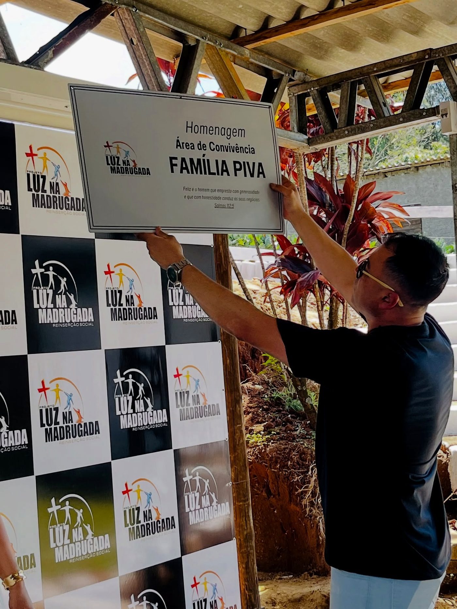

Ninguém acende a luz sozinho.
Instituições, empresas e pessoas que doam tempo, estrutura e conhecimento para que a obra siga de pé.
Parcerias que sustentam a obra
Cada parceiro fortalece uma frente: capacitação, alimentação, segurança, estrutura ou mentoria. Onde falta logo ou foto, o espaço fica reservado até o material oficial chegar.
Box Print
Parceira de mais de oito anos. Produziu o vídeo institucional da casa e apoia a comunicação do projeto.
Veiga Sul
Com Mauro Veiga, viabiliza a frente de reciclagem de resíduos e a capacitação dos acolhidos.
SESC Mesa Brasil
Programa de segurança alimentar que apoia a casa com doação e aproveitamento de alimentos.
Brigada Militar
Parceria de proximidade com a comunidade, representada pelo Major Juliano. usar a foto do Major Juliano com o Marcos
Desafio Jovem de Três Coroas
Instituição parceira na causa da recuperação e reinserção, com troca de experiência e apoio mútuo.

Família Piva
Homenageada na área de convivência da casa, em reconhecimento ao apoio à obra.
Cla Weber
Mentora de mulheres, do programa Ecossistema Águias. Soma mentoria e rede ao trabalho do projeto.
Sua empresa aqui
Empresas e igrejas que queiram firmar parceria têm espaço garantido nesta página. Fale com a equipe.
Formas de firmar parceria
Capacitação
Ofereça um curso, professores ou equipamentos para uma nova frente de qualificação.
Insumos e estrutura
Doe alimentos, material de construção ou apoie obras e melhorias na casa.
Compra da produção
Adquira tijolos, meio-fios, lenha ou pisos PAVS e ajude a sustentar a obra.
Quer caminhar junto?
Toda parceria começa com uma conversa. Fale com a equipe e desenhamos juntos a melhor forma de apoiar.